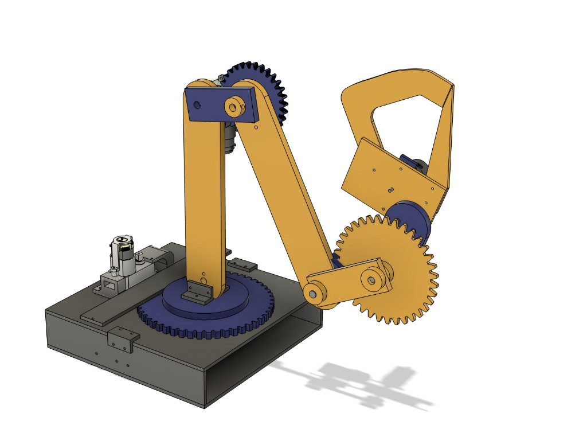
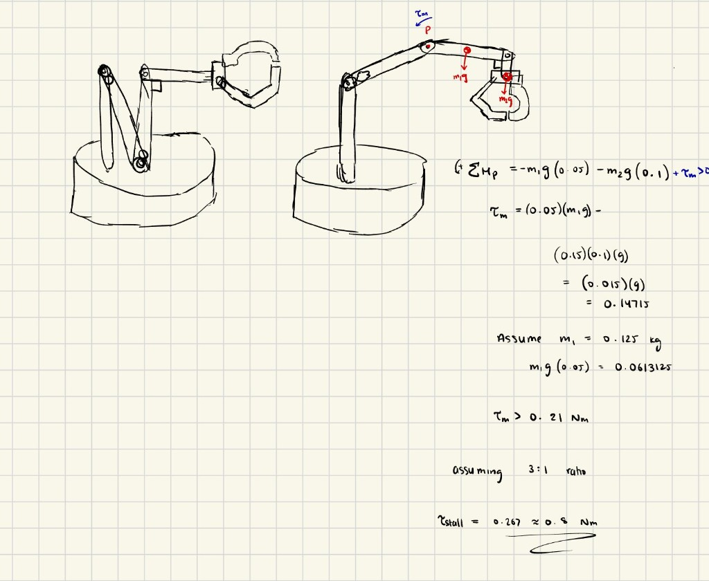
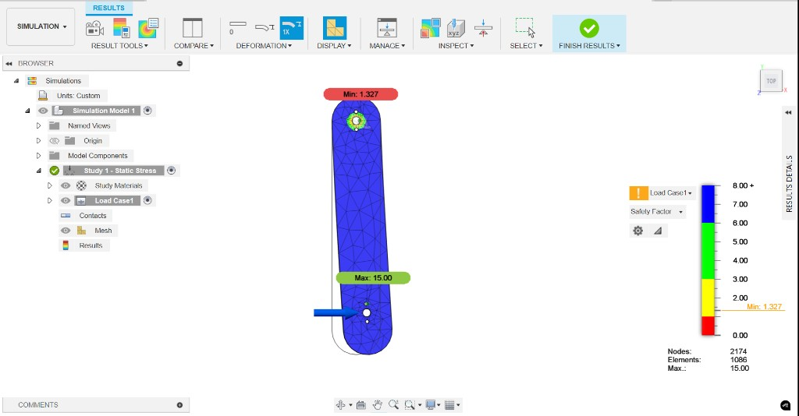
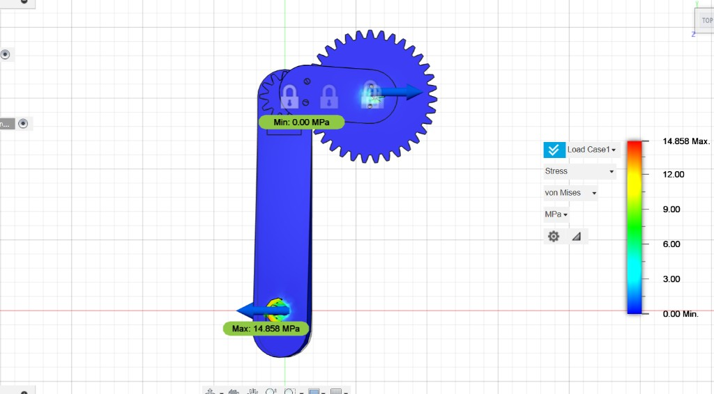

Robotic Arm Design and Fabrication
I designed and built a multi-DOF robotic arm through a full mechanical engineering workflow: early prototyping, CAD development, force and torque analysis, FEA validation, and fabrication with laser cutting, 3D printing, drilling, and reaming. The goal was a structurally reliable, manufacturable arm capable of basic pick-and-place tasks.
Concept development and prototyping
I started with hand sketches and simple prototypes to explore joint placement, link lengths, and workspace. Early models validated clearances, motion range, and the feasibility of a gear-driven shoulder before moving into a full CAD assembly.
CAD design
The full CAD model included:
- Gear-driven shoulder joint with large spur-gear reduction
- Two-link arm architecture with rotational joints
- Custom housings, linkages, and bearing seats
- Modular gripper end-effector
- Base-mounted motor system for torque transmission
The assembly drove structural analysis, motor sizing, and fabrication planning.

Force, torque, and power analysis
I sized the first-joint actuator with a free-body diagram at full extension, summing moments about the shoulder pivot to account for gravitational loads on each link and the gripper. After a 3:1 gear reduction, the required stall torque was about 0.8 Nm, which guided motor and gear selection.

Finite element analysis (FEA)
Using those load estimates, I ran targeted static simulations in Autodesk Fusion 360 on stress-critical parts: primary arm links, joint housings, and mounting plates. I applied realistic constraints, refined mesh at stress concentrations, and checked results against material yield. Simulations showed adequate safety margins (e.g. minimum safety factor ~1.33 on the primary link) before fabrication.


Fabrication and manufacturing
- Laser cutting — flat structural plates and brackets
- 3D printing — complex housings, covers, and joint geometry
- Machining — drilled and reamed precision holes, deburring, press-fit bearings
The CAD included tolerance stack-ups and fit specifications for smooth assembly.
Assembly and testing
I assembled the full arm, verified joint motion and alignment, and checked rigidity under load. Built performance matched predictions from the torque and FEA work, confirming the design workflow end to end.
Playback starts muted. Use the player controls to turn sound on if you want it.
Watch on YouTube: youtube.com/watch?v=0M7rdd7oXAE
Tools and technologies
Autodesk Fusion 360, hand calculations, FEA (static stress), laser cutting, 3D printing, drilling, reaming, bearing press-fit